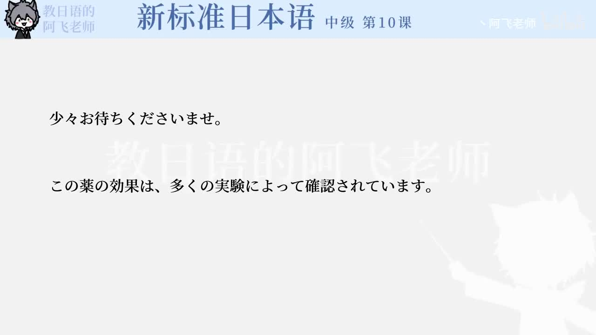

Bilibili P147 · Grammar Briefing
スケジュールの文法
围绕大阪取材日程、有马温泉邀请和旅馆预约，学习期间表达、计划目的、委婉邀请、建议、服务敬语和预约确认。
全篇听力精讲
按 15 个语法点轮播。每项包含日语例句、中文意思、接续、常见用法和易错提醒。
这一讲解决什么
安排日程用「滞在期間中」「できるよう」「予定を立てる」说明采访计划。
提出邀请用「もしよかったら」「てみませんか」「ほうがいい」柔和建议。
预约旅馆用「ございます」「でしょうか」「かしこまりました」完成服务确认。
第10课日程处理链
1 · 期间今日から一週間
2 · 计划取材ができるよう
3 · 邀请寄ってみませんか
4 · 预约空いているでしょうか
5 · 确认かしこまりました
15组语法与日程表达
日程与预约核心词汇
整块记忆的搭配
练习与复习
来源说明：视频标题、时长、CID 和首帧来自 Bilibili 公开视频接口；本页依据该视频对应的《新标准日本语》中级第10课「スケジュール」语法与课文例句整理，不是视频逐字稿。